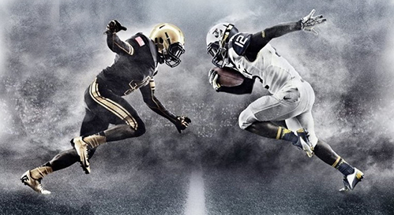

Az amerikai futball

Az amerikai futball az egyesült államok legelterjedtebb és legnézettebb sportja a kosárlabda mellett.
Amerikai focihoz tartozó tudnivalók,"érdekességek":
Amerikai foci Magyarországon
Focihoz kellő felszerelés
Tassi14.github.io
A játékosok, felosztások